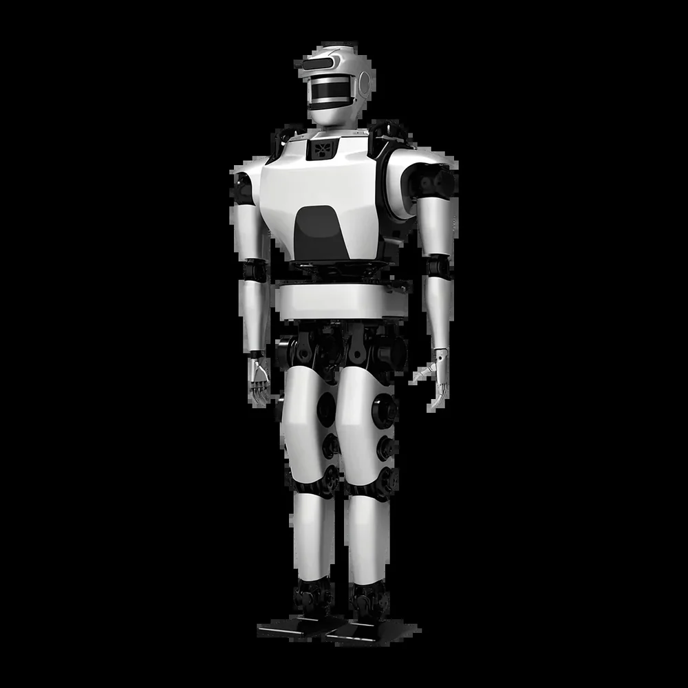

Database · Legged Robots
HariBit
HariBit (理工华汇) is a Beijing developer of humanoid and quadruped robots with deep Beijing Institute of Technology heritage.
Humanoid Quadruped Beijing

Company Overview
- HariBit develops bipedal humanoids and quadruped robots grounded in decades of BIT bionic research.
- Focuses on locomotion, balancing and educational/research platforms.
- A representative of China's academic spinoff robotics.
Key Facts
| Full Name | Beijing HariBit Technology Co., Ltd. |
|---|---|
| Chinese Name | 北京理工华汇智能科技有限公司 |
| Founded | 2019 |
| Headquarters | Beijing |
| Core Products | Humanoid & quadruped robots |
| Background | Beijing Institute of Technology spinoff |
| Status | Research-oriented legged-robot maker |
Actuators & Sensors
- High-torque joint actuators for walking.
- IMU + force sensing for balance.
- Reinforcement-learning locomotion.
Supply-Chain Analysis
- Beijing R&D with domestic actuators.
- Academic partnership with BIT.
Competitor Comparison
Competes with Deep Robotics and Unitree in legged robots; differentiates on academic/educational focus.